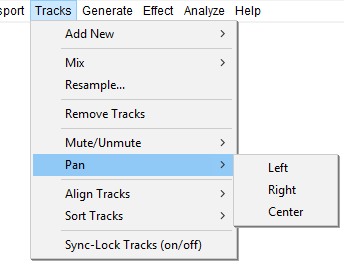

Tracks Menu: Pan
From Audacity Development Manual
The Pan submenu enables you to change the panning of all the tracks you have selected or partially selected, in one go, without having to use the Pan sliders in each track's Track Control Panel. The panning choices are extreme Left or Right pan or Center pan.
If no tracks are selected, pan is changed in all tracks.
- Click, or hover, on any menu item in the image to read about that command. Skip the image
- 
Left
Pans the selected audio tracks (or all tracks if none is selected) to the extreme left.
Right
Pans the selected audio tracks (or all tracks if none is selected) to the extreme right.
Center
Pans the selected audio tracks (or all tracks if none is selected) to the center.